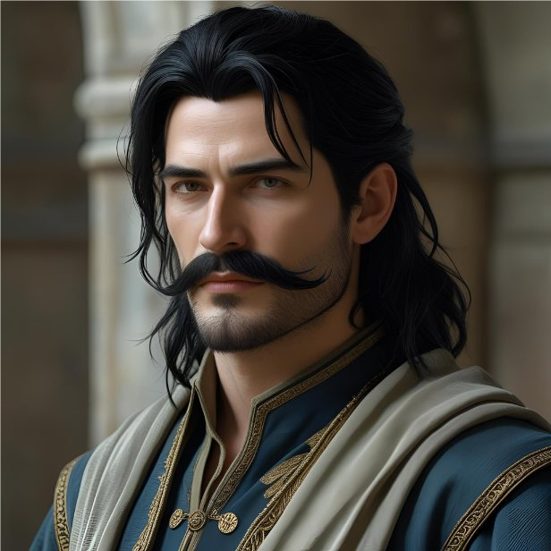

Le Voïvode en cuisine
- Statut : à surveiller
- Liens avec d'autres quêtes :
objets-voles-basilio(la couronne de Leomance),invasion-landes-grises(les voisins des héros) - Personnages : le Voïvode Brancovan de Rourika, Kaelis, le duc Ganelon de Bromaël
- Lieux : les cuisines du château de Canderas, l'Ouromagne

Ce que les héros savent
- Le Voïvode Brancovan est prisonnier du duc Ganelon de Bromaël. Il travaille comme commis de cuisine au château de Canderas.
- Il a uni les Ouromans et envahi Bromaël. Les héros l'ont vaincu et lui ont pris la couronne de Leomance dans le volcan Kiriadum.
- Sous une influence divine, il est tombé amoureux de Kaelis, sans retour.
Risque
- Le Voïvode va-t-il essayer de s'échapper pour reconquérir son royaume ?
- Ou va-t-il essayer d'enlever Kaelis, dont il est amoureux ?